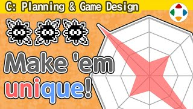
速览
「角色立起来」包含很多要素，这里谈企划层面。在游戏企划中增加角色时——可用的我方角色、斗士，或敌人——最好把性能调得更尖（peaky）。当然变得不能用也没意义：例如射击游戏里只会往行进方向以外打的自机就没意义。游戏规则里大概有适当的理想形；性能中性时，能偏离多少、给游戏带来多少不同可能是关键。这在做我方角色和敌人时大不相同：例如卡比系列的戈尔多，无敌、什么攻击都无效，没有攻击手段，也没有固定动作，单放着只是无聊的敌人；但通过配置与其他敌人配合，就有了各种意义——玩过卡比的人，戈尔多大概是有别于其他敌人、印象深刻的角色。无论我方还是敌人，赋予个性就会产生攻略；最好把特性尖锐到能一句话概括成标题。而要让角色立起来，有麻烦但避不开的要素：特殊规格（固有规格）——为只有该角色能做的事专门写程序。例如《大乱斗 特别版》DLC 斗士一定有某种特殊规格：反逆系统、人格面具、MP 与指令、羽毛使用与冲撞、超必杀技、四种英雄遗产、双臂系统、方块与建造、单翼、瞬间切换、八方向输入、指令、魔法切换……内部还有更多。很费工但必须让角色立起来；角色之间性质差异也拉得挺大——毫无差别就不好玩，希望是个性碰撞的乐趣。即使从数值出发，也别做得小而整齐，而是先做出凹凸，再补足出问题的地方。
1. 把性能调尖 0:03
「角色立起来」包含很多要素，这次从企划层面来谈。在游戏企划里增加角色时——可以是能操作的我方角色或斗士，也可以是敌人——樱井认为最好把性能调得更尖。
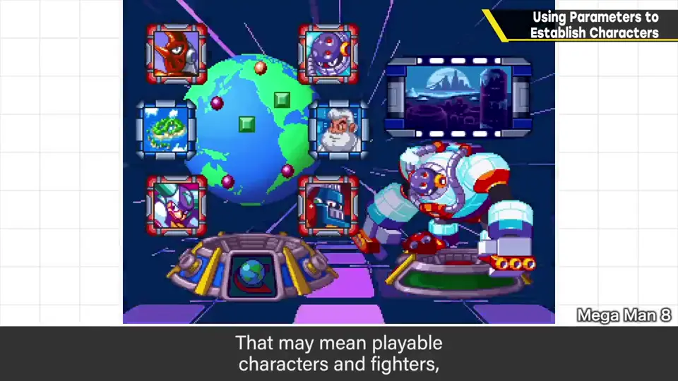
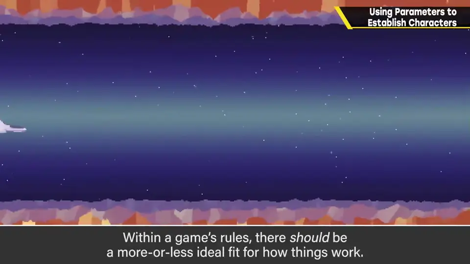
当然变得不能用也没意义：比如射击游戏里，一架只会往行进方向以外开火的自机就没有意义。
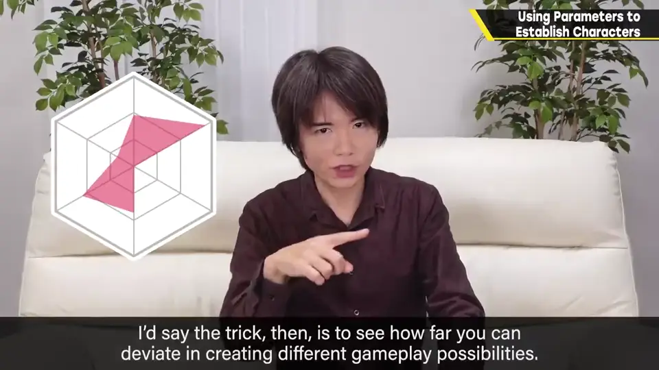
2. 戈尔多：靠配置产生意义 1:02
这一点在做我方角色和做敌人时大不相同。例如卡比系列的戈尔多：无敌、任何攻击都无效，没有攻击手段，也没有固定动作——单单放着，只是无聊的敌人。
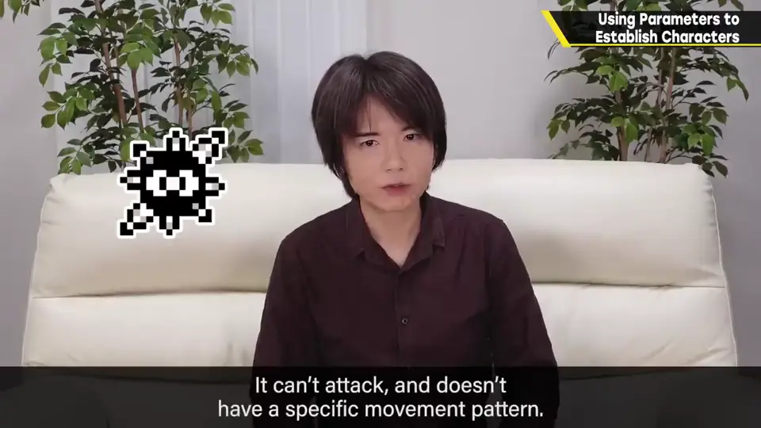
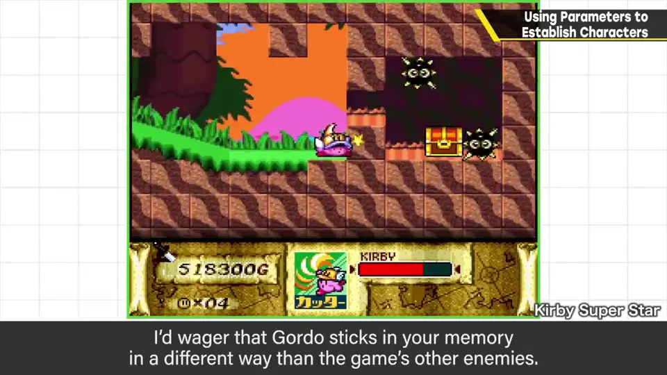
但通过配置与其他敌人组合，它就有了各种意义。玩过卡比的人，大概会觉得戈尔多是有别于其他敌人、令人印象深刻的角色。
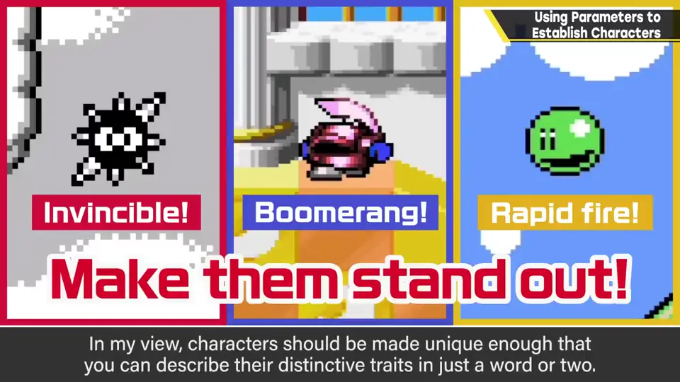
3. 特殊规格：麻烦但躲不开 1:48
要让角色立起来，有一个麻烦但避不开的要素：特殊规格（固有规格）——为只有这个角色能做的事，专门写程序。
例如《大乱斗 特别版》的 DLC 斗士，一定都有某种特殊规格：反逆系统、人格面具、MP 与指令、羽毛的使用与冲撞、超必杀技、四种英雄遗产、双臂系统、方块与建造、单翼、瞬间切换、八方向输入指令、魔法切换……内部其实还有更多。
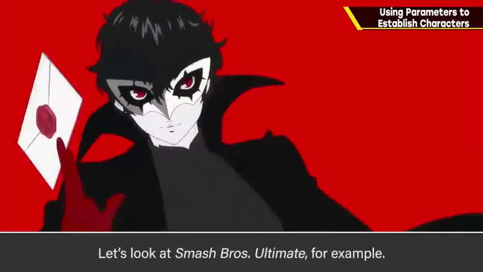
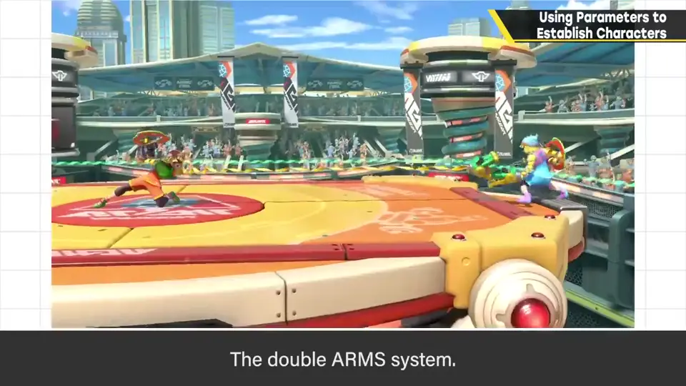
大致上，虽然费工，但必须让角色立起来；而且各角色的性质差异也拉得很大。
4. 先凹凸，再补问题 3:06
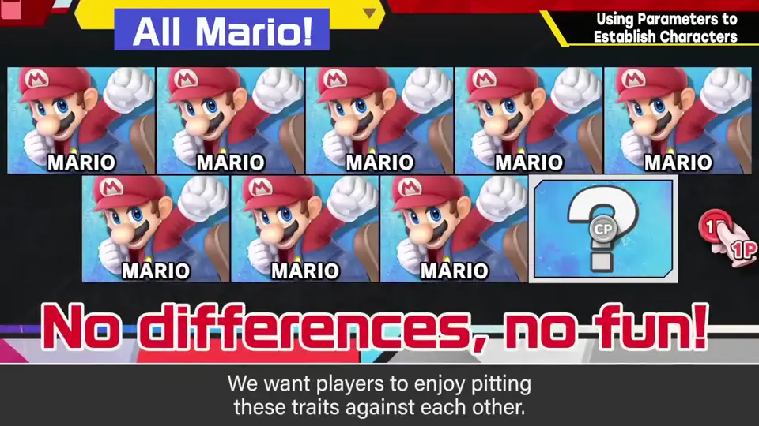
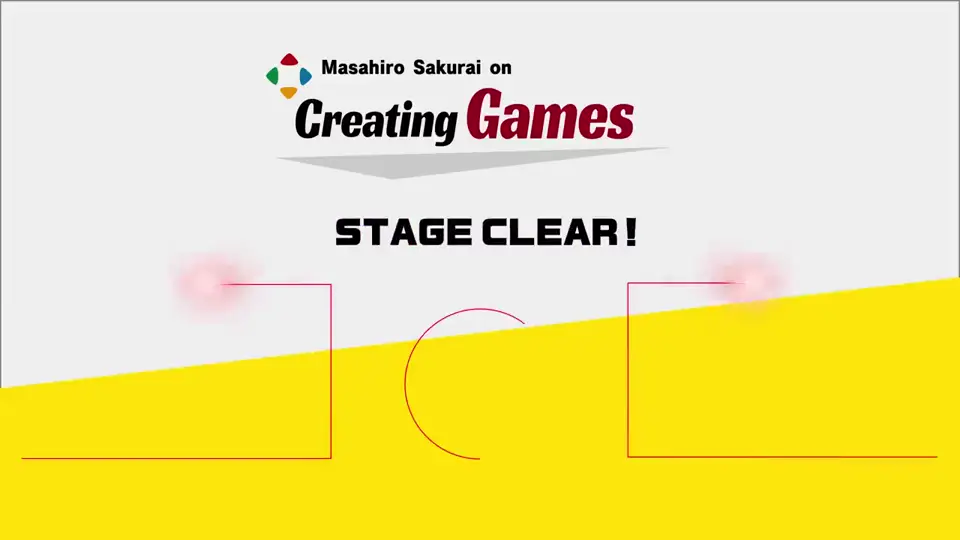
自测题
1. 樱井说增加角色时性能该怎么调？
调得更尖：以中性为基准，看能偏离多少、带来多少不同可能，但不能变得无用。 0:20
2. 戈尔多为什么能成为印象深刻的敌人？
本身无敌、不攻击、无固定动作，单放无聊；但通过配置与其他敌人组合产生了各种意义。 1:02
3. 什么是特殊规格（固有规格）？举例。
为只有该角色能做的事专门写的程序；如大乱斗 DLC 斗士的反逆系统、双臂系统、方块建造、瞬间切换等。 1:48